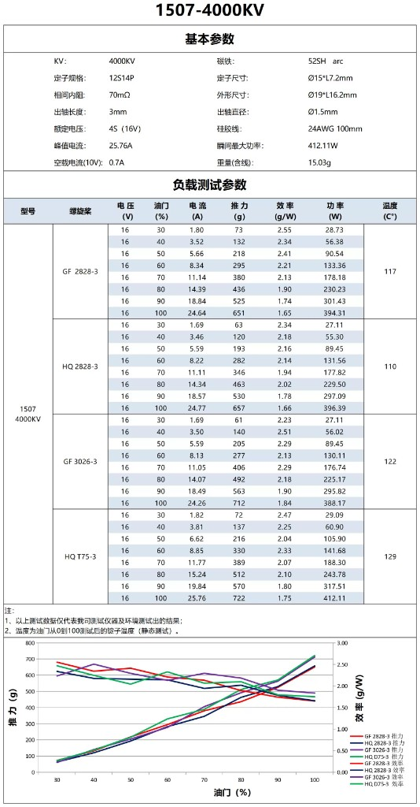
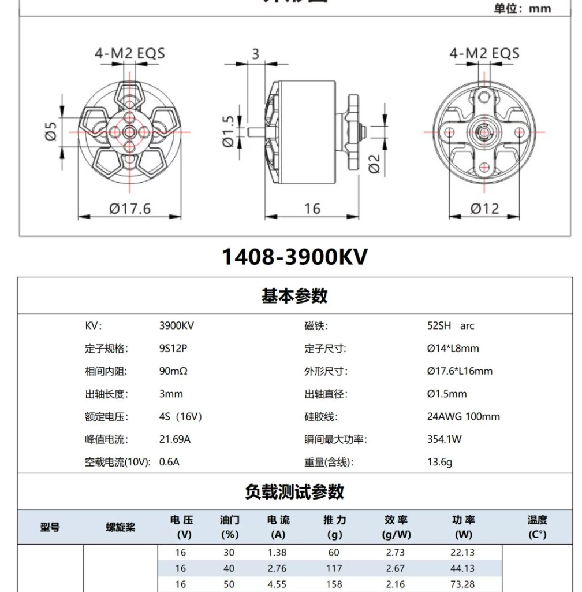
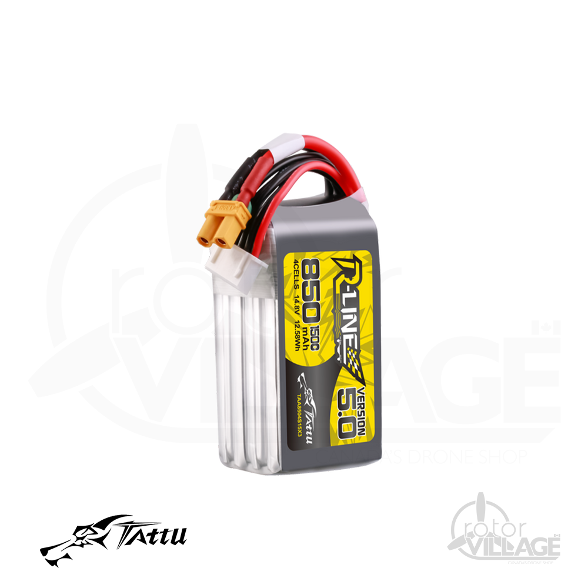
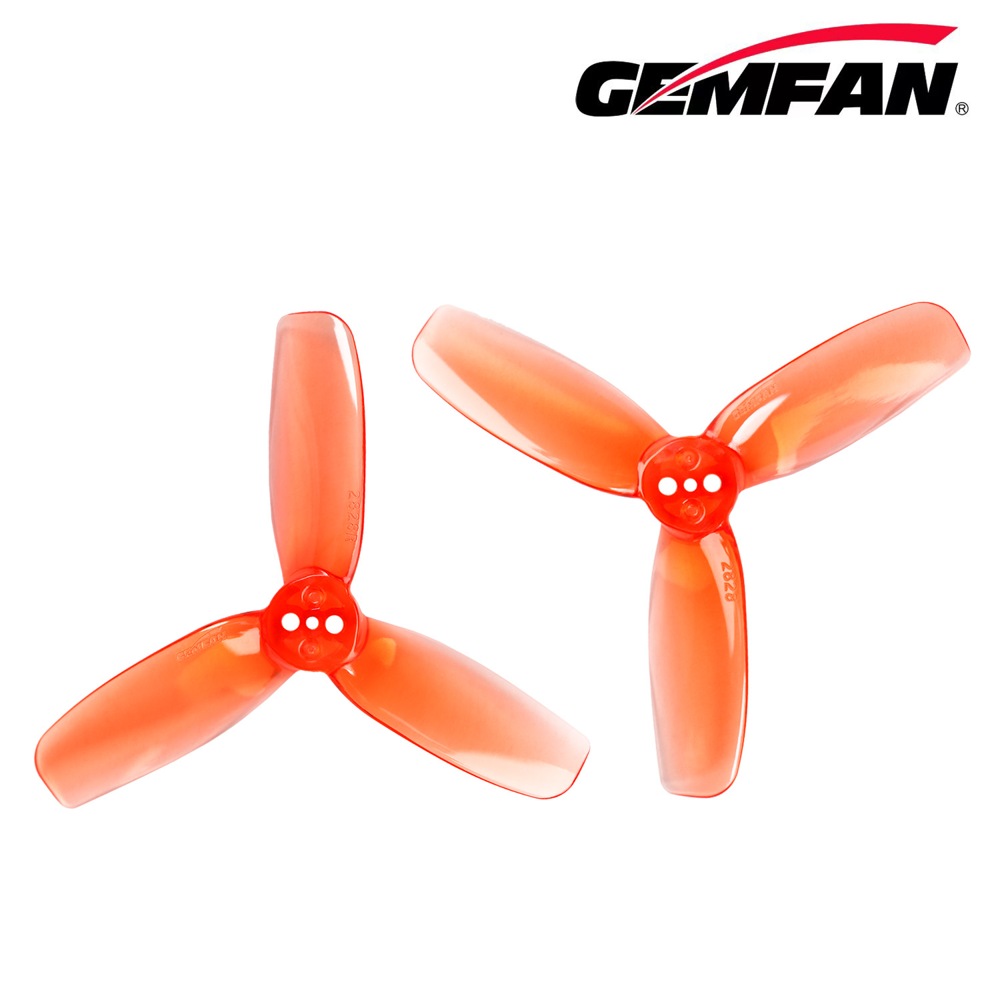
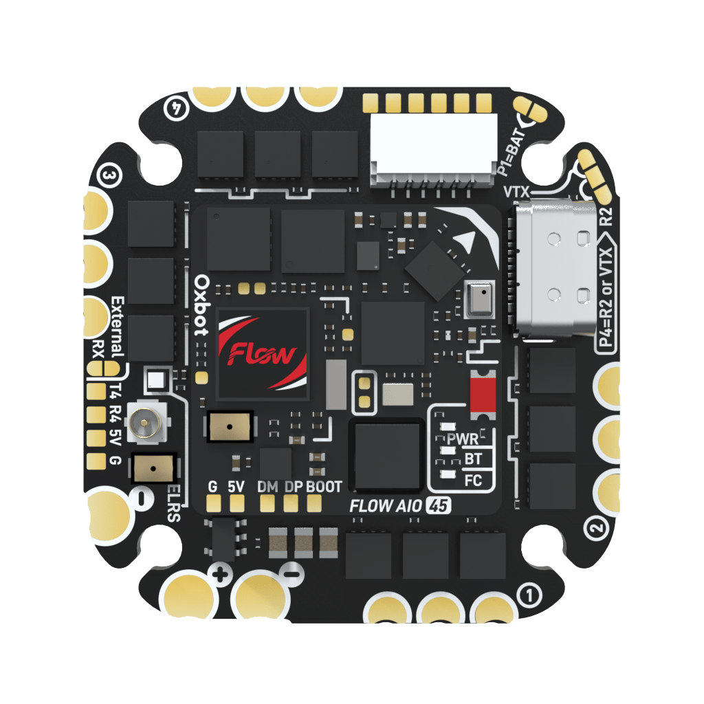

影片欣賞
先看比賽畫面：怎麼撞、怎麼進門。

本隊定稿：攻擊 VCI 1507（或 DYH1408）· 防守 VCI 1408 · 槳 2828-3 · 電池 4S 高 C · LED 22 顆 · 本場 5 球／9 電。
約 70–90 分鐘。時間不夠就略過「可略」步驟。
先看比賽畫面：怎麼撞、怎麼進門。
馬達、電池、槳、飛控：是什麼、為什麼、本隊怎麼選。
FIDA Class 20 ≠ FAI F9A-B。本隊備賽走無刷 F9A-B。
≤300 g、4S、槳 ≤76 mm、LED、1 名射手。
記住：攻擊 1507、防守 1408、槳 2828-3。
馬達 → 電池 → 槳。時間緊可只投馬達峰值圖。
目標 285–295 g；對照換電節奏。
硬體選型 → 關鍵 BF 值 → 隊色 22 燈。
5 球 9 電、電壓、射手標。作業＝列印清單。
講到這裡停住；細節再進各配備頁。

攻擊：VCI 1507
防守：VCI 1408
電池：4S 高 C
槳：2828-3
飛控：OxbotAttack
VCI 1507（或 DYH1408）· 2828-3 · 4S 高 C
飛控優先 Oxbot／RATE。small_angle=180、Failsafe DROP、ARM＝AUX1。
Defense
VCI 1408 · 2828-3 · 4S 高 C
飛控可用 HAKRC F411；LED 隊色與射手尾燈同攻擊機。
講課用上方順序；動手組機用這四步。